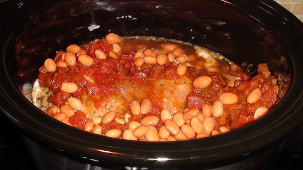

Hi Again! I’m JWo, AK’s husband, posting this Iron Chef recipe from Cafe Beignet in New Orleans. I know right? Very meta. Also: your jealousy — I can feel it.
If this is your first Iron Chef post (it’s my second, so don’t feel too out of it), Danielle from elleinadspir created an idea that her husband would name an ingredient each week. Then, we cook with it! Last week was Balsamic Vinegar (my recipe, Danielle’s linkup). This week: BEER.
Now, my wife… she does not like the beer. She’s more a marg type of girl. So I had to sneak this secret ingredient in — how would someone do such a thing? By hiding the beer in a slow cooker OF COURSE. The best part? She loved these tacos, even after hearing it was beer’d.
I call this thing: BBBBQ Pork. the extra B is for beer. The other extra B is a typo
Ingredients
* 1 lb pork tenderloin (BBQ seasoning if you can find)
* 1 Onion
* 1 Shiner Bock (or other dark beer)
* 1 Can rotel (tomatoes and green chiles)
* 1 Can Pinto Beans
Method
* Slice onion, layer into slow cooker
* Add pork tenderloin on top of onions
* Add 2/3 of the beer. Reserve other 1/3 for another use
* pour rotel over tenderloin
* Heat on high for 4 hours (or low for all the day)
On to the Pics!
[caption id="attachment_9067" align="aligncenter" width="500" caption="The Before. Anticipation!"][/caption] [caption id="attachment_9069" align="aligncenter" width="500" caption="Tada!"] [/caption]
[/caption]
This BBBBQ Pork is available on We Eatt for Sharing.


{kind=link}
{kind=link}
Recent Comments